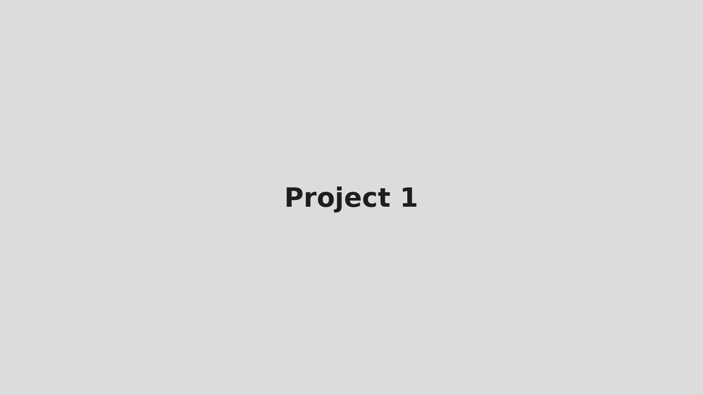

About Me
Licensed Structural Engineer with experience in residential, commercial, and industrial projects. Passionate about resilient design and practical solutions.
Download CVApproach
I blend analytical rigour with constructability — using modern software and pragmatic design choices.
Software
ETABS, SAFE, SAP2000, Midas Gen, Revit, AutoCAD